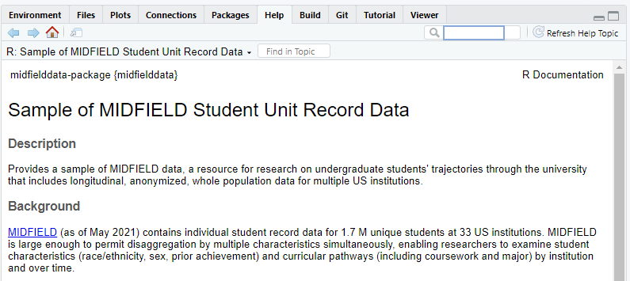

Sample of the MIDFIELD Student Unit Record Data
The goal of midfielddata is to provide a sample of MIDFIELD data for practice working with longitudinal, de-identified, individual student unit records.
Overview
MIDFIELD contains individual Student Unit Record (SUR) data for 1.7M students at 21 US institutions (as of June 2022). MIDFIELD is large enough to permit grouping and summarizing by multiple characteristics, enabling researchers to examine student characteristics (race/ethnicity, sex, prior achievement) and curricular pathways (including coursework and program) by institution and over time.
midfieldr is an R package that provides tools for working with MIDFIELD SURs. The tools in midfieldr work equally well with the research data in MIDFIELD and the practice data in midfielddata.
midfielddata is an R data package that provides practice data (a proportionate stratified sample of MIDFIELD) with longitudinal SURs for nearly 98,000 undergraduates at 12 institutions from 1987–2016 organized in four data tables:
| Data set | Each row is | N rows | N columns |
|---|---|---|---|
student |
a student upon being admitted | 98k | 13 |
course |
a student in a course | 3.4M | 12 |
term |
a student in a term | 711k | 13 |
degree |
a student who completes their program | 48k | 5 |
Requirements
- R (>= 3.5.0)
Installation
Because of the size of the data tables, installing midfielddata takes time; please be patient and wait for the prompt “>” to reappear. In the Console, run:
# install midfielddata
install.packages("midfielddata",
repos = "https://MIDFIELDR.github.io/drat/",
type = "source")
# be patientYou can confirm a successful installation by running the following lines to bring up the package help page in the Help window.
library("midfielddata")
help("midfielddata-package")
Build
midfielddata currently passes R CMD check with the results shown below. The “note” is expected given the large size of the data table.
due to the size of the data sets. Anything over 5Mb
0 errors v | 0 warnings v | 1 note x
NOTE installed size is 18.5Mb
sub-directories of 1Mb or more: data 18.4Mb
R CMD check succeeded Contributing
- Because this is a data package, contributions would not generally be expected. However, bug reports and feedback are welcome via the GitHub Issues page.
- Participation in this open source project is subject to a Code of Conduct.
Acknowledgments
This work is supported by a grant from the US National Science Foundation (EEC 1545667).
License
midfielddata, written in 2018–2022 by Richard Layton, Russell Long, Matthew Ohland, Marisa Orr, and Susan Long, is licensed under CC0 1.0 (CC0 summary) (CC0 full license).
To the extent possible under law, the authors have dedicated all copyright and related and neighboring rights to this software to the public domain worldwide. This software is distributed without any warranty.